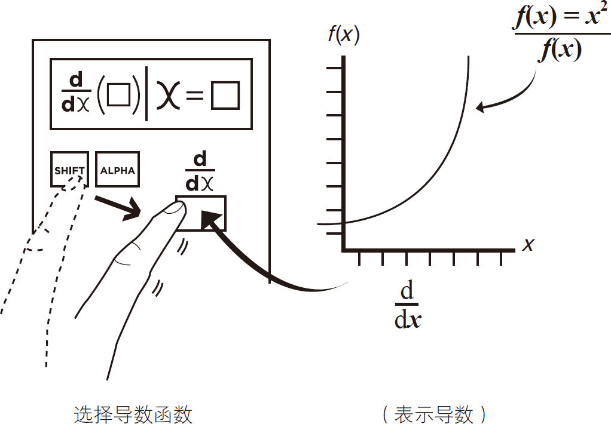
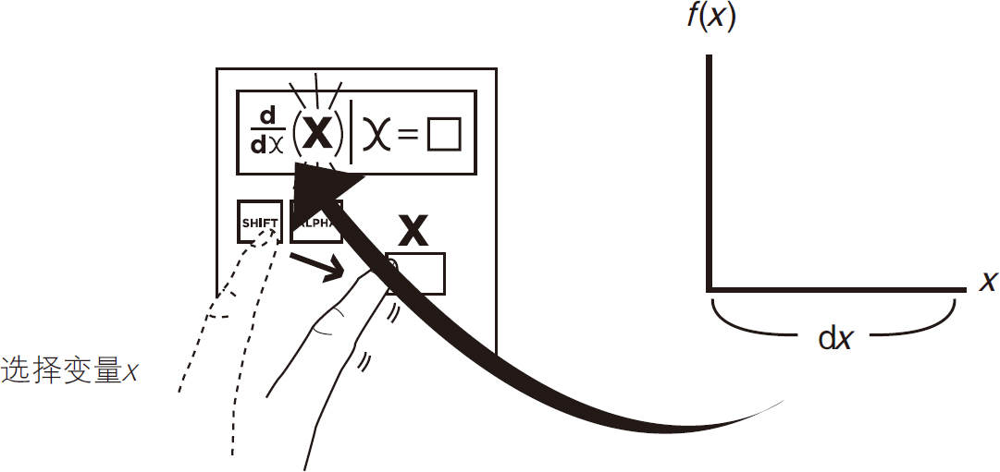
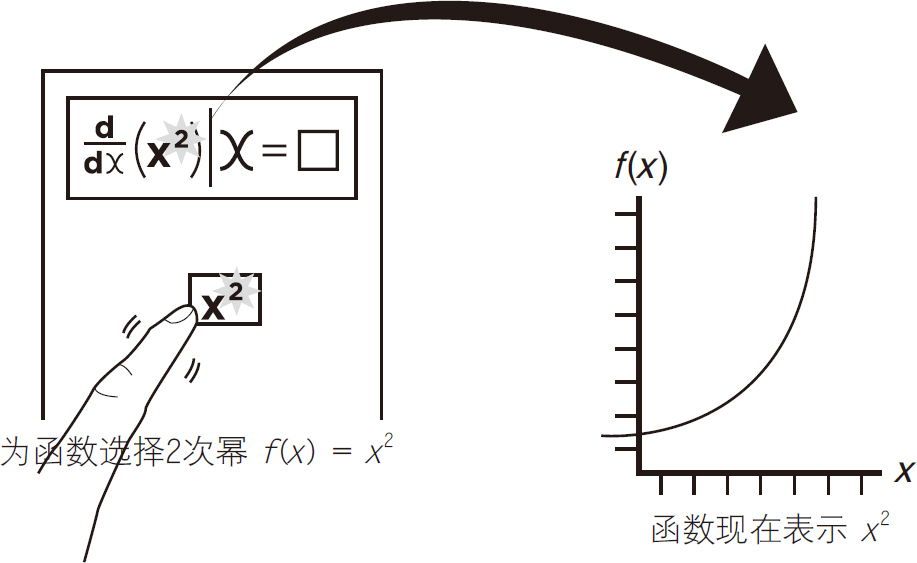
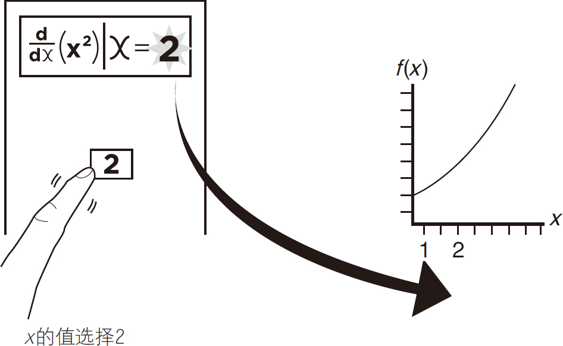
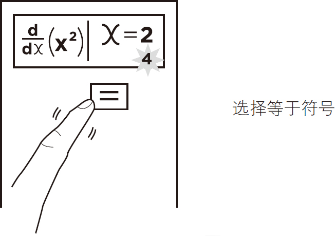
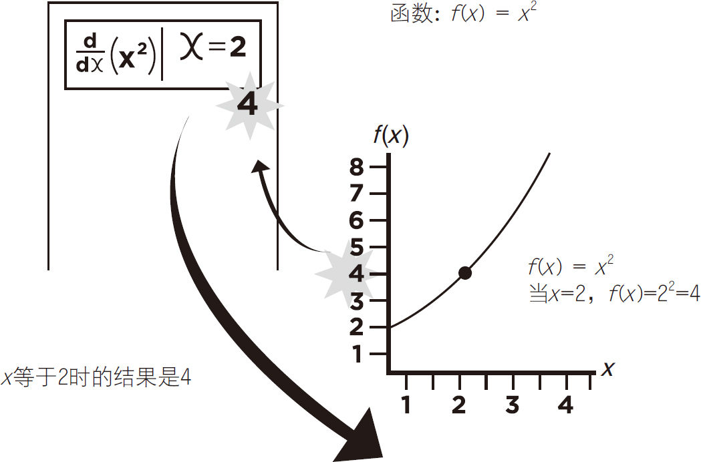

用配备了一定功能的科学计算器来计算微分方程是很容易的。下面的示例将向你展示如何计算函数f （x ）＝x 2 在x ＝2时的导数。
（对于特定的键和函数的使用信息，请参考您的计算器用户指南。）
首先选择计算器上的导数函数，该函数通常以d/dx 符号形式显示，如图5-16所示。
例1：求函数［f （x ）＝x 2 ］在点x ＝2处的导数。

图5-16
接下来，选择x 作为函数变量，见图5-17。

图5-17
然后为变量x 选择2的幂，这就建立了函数f （x ）＝x 2 ，如图5-18所示。

图5-18
将手指移动到“x ＝”部分（会因计算器而异）并选择2，见图5-19。

图5-19
最后，选择等号（＝）来计算，见图5-20。

图5-20
如图5-21所示，计算器显示数字4是最后的结果。

图5-21